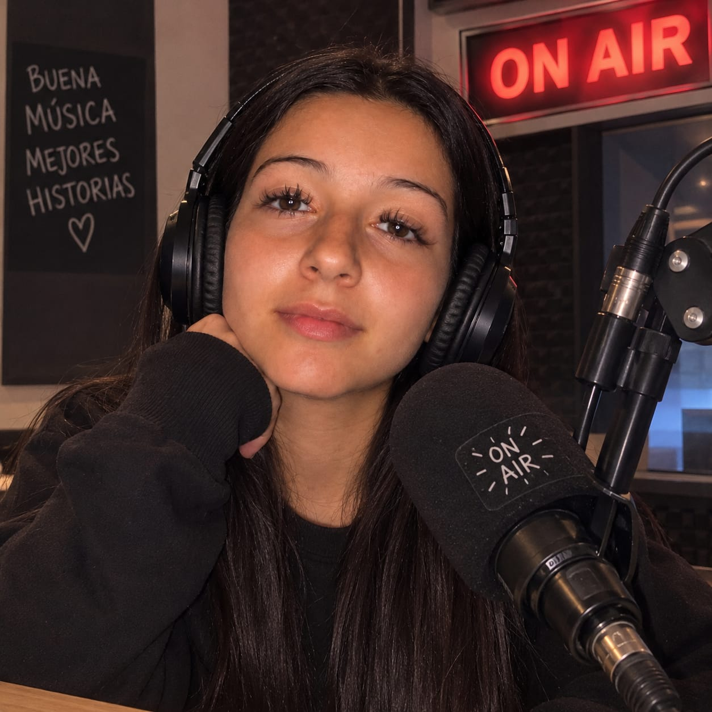
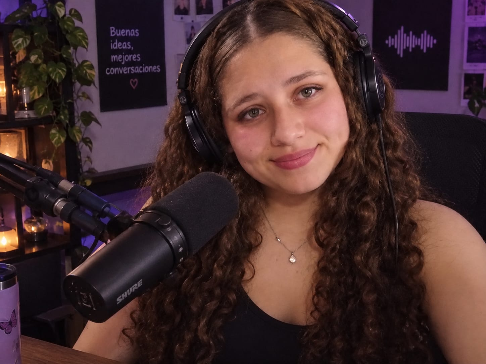
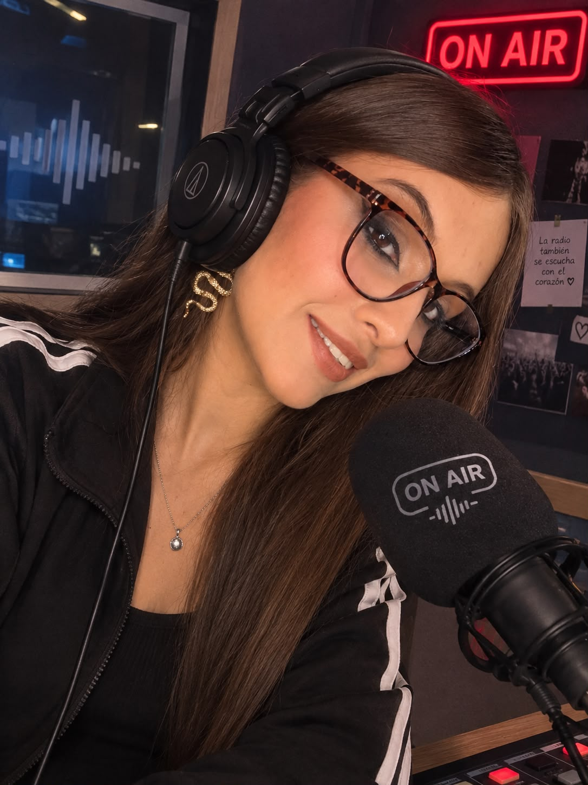
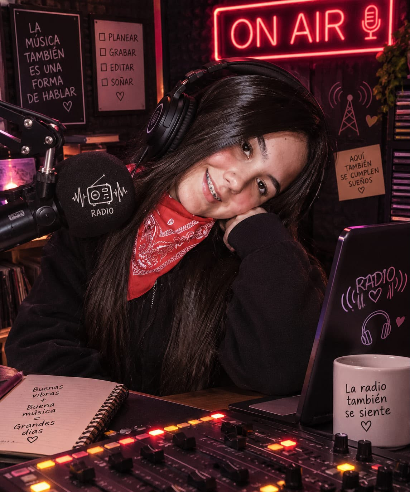
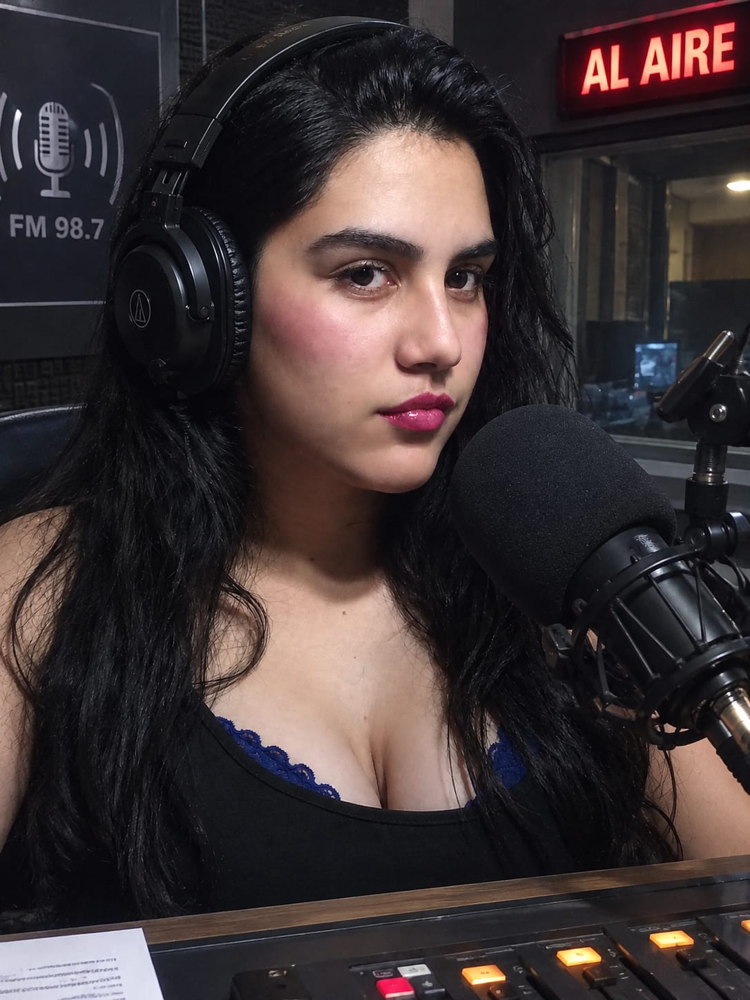

Amor
¿Qué significa realmente amar?
RADIO • VOCES • DEBATES
Una radio creada por cinco estudiantes para hablar de aquello que muchas veces preferimos callar.
¿QUÉ ES DESORIENTADOS?
Desorientados es una radio creada por cinco estudiantes. Un espacio para conversar, cuestionar y compartir diferentes miradas sobre temas que forman parte de nuestra vida cotidiana.
02 • PROGRAMAS
Explorá los temas que forman parte de nuestras conversaciones.
¿Qué significa realmente amar?
Estereotipos, expectativas y lo que significa ser mujer.
Vínculos, amistades, límites y conexiones.
Las conversaciones que normalmente evitamos.
03 • DESORIENTADOS RADIO
Escuchá nuestro programa y participá de la conversación.
Programa en vivo
Participá de la conversación
Bienvenidos al chat.
04 • QUIÉNES SOMOS





SEGUÍ LA RADIO